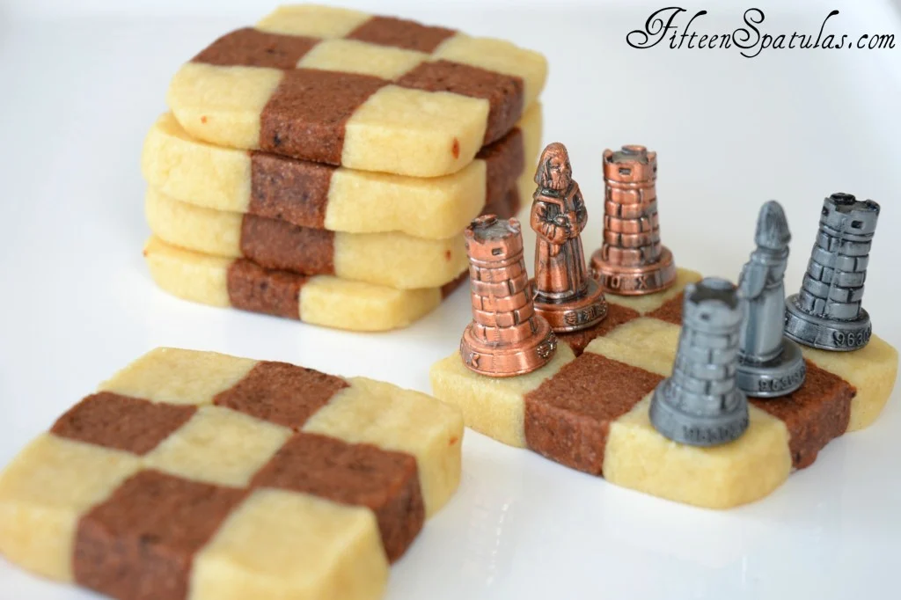

Checkerboard Cookies

Description:
These fun checkerboard cookies are much easier to make than they look! Vanilla and chocolate sable doughs are combined for this holiday cookie that is perfect for cookie swaps.
Aren’t these so fun? I love the checkerboard effect so much that I had to break out the chess pieces for the photo.
The dark checkering here is a chocolate espresso dough, and the light is a basic vanilla dough, and I really love eating the two together like this.
These whimsical cookies are soft, buttery, and crumbly, and are a fun addition to any holiday cookie spread.
Ingredients:
- 15 oz all purpose flour, by weight (3 cups, if measuring)
- 1.5 tsp baking powder
- 1/4 tsp salt
- 1 cup unsalted butter at room temperature
- 1 cup sugar
- 1 extra large egg
- 1 tsp vanilla extract
- 2.25 tsp instant espresso powder
- 2 oz bittersweet chocolate melted
- 1 tbsp cocoa powder
Instructions:
- Whisk to combine the flour, baking powder, and salt. Set aside.
- In a stand mixer bowl fitted with the paddle attachment, beat the butter to spread around the bowl. With the mixer running, stream in the sugar. Review my creaming article if you have forgotten how to do this properly. Add the egg and vanilla, and mix until combined.
- Slowly add the flour mixture to the stand mixer bowl until combined.
- Remove half of the dough, wrap in plastic and put into the fridge.
- Add the espresso powder, chocolate, and cocoa powder to the remaining dough, and mix to combine.
- Remove the coffee dough from the mixer and shape into a squared off block, about 2 inches tall and wide, and 6 inches long. Do the same with the vanilla dough.
- Refrigerate both doughs on a sheet pan for 1 hour.
- Cut each block into desired size for checkering. I cut the block into thirds, then into thirds again (see blog photos).
- Start alternating the pieces with chocolate and vanilla, then square it off and press together. Refrigerate the dough for 30 minutes.
- Preheat the oven to 350 degrees F. Cut the dough into 1/4 inch thick slices and place on a parchment paper lined sheet pan.
- Bake for 10 minutes, then cool on a wire rack. Enjoy!
Homepage